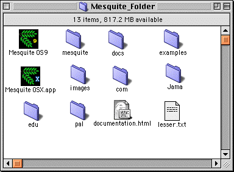
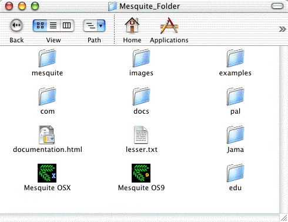

(Please email us ( )
with questions or comments about downloading Mesquite).
)
with questions or comments about downloading Mesquite).
Download one of these, which contain Mesquite for use on the Mac OS:
Requirements: MRJ 2.2 (www.apple.com/java)
Instructions: Download and unstuff the .sit file above. This will create a folder approximately as follows:

To start Mesquite, you can double click either the icon "Mesquite OS 9", or double click a data file in "example files".
NOTE: If you have a previous version of Mesquite installed in your system, we advise that you delete it before running the new version.
Requirements: OS X 10.3 or 10.2 recommended; 10.1 with java update 1 has some especially frustrating bugs; Mesquite is more or less unusable with OS X 10.0. Mesquite can be run in one of two ways on OS X. If you use the application "Mesquite OS X", Mesquite will run under java 1.3.1 if available. This is the best-tested style. Alternatively, if you have Java 1.4.2 Update 2 and you use the application "Mesquite OSX (Java 1.4)", Mesquite will run under java 1.4.2. This appears to be less stable than 1.3.1. Do not attempt to use "Mesquite OSX (Java 1.4)" if you have a version of Java 1.4 prior to 1.4.2 Update 2. (The problems with early versions of Java 1.4 appear to be restricted to Mac OS X.)
Instructions: If you download the dmg file above, double click on the file to mount the disk image. Drag the contained "Mesquite_Folder" to your hard drive to install. Otherwise, download and unstuff the .sit file above. Both methods will create a folder "Mesquite_Folder" whose contents will be approximately as follows:

To start Mesquite, you can double click either the icon "Mesquite OSX", or double click a data file in "examples".
NOTE: If you have a previous version of Mesquite installed in your system, we advise that you delete it before running the new version.
More details of issues of using Mesquite under Mac OS X are described in the Support page.